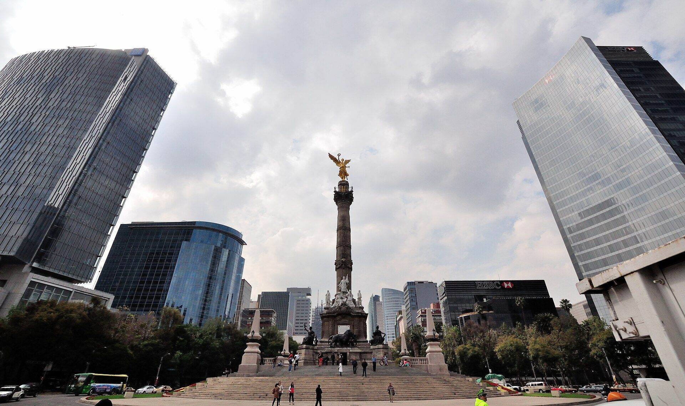
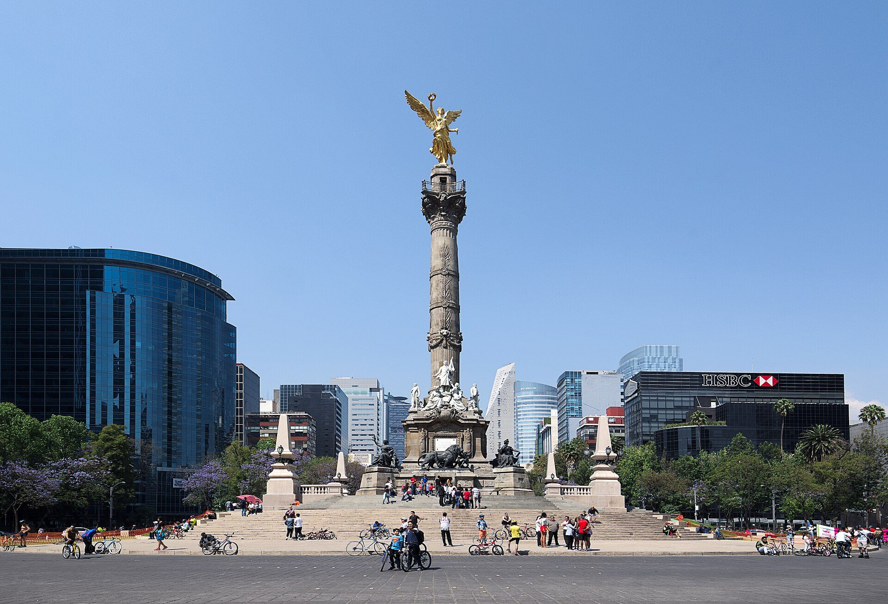
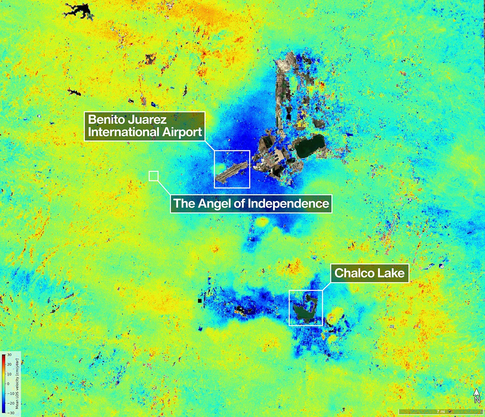

<title>CDMX se hunde</title>
<style>:root{--accent:#0E7490;--brand:#0E7490}</style>
<svg id="brandmark" hidden viewBox="0 0 40 40"><rect width="40" height="40" rx="10" fill="#0E7490"/><g transform="translate(8 8)" fill="none" stroke="#fff" stroke-width="2.4" stroke-linecap="round" stroke-linejoin="round"><path d="M12 3v14M6 11l6 6 6-6M4 21h16"/></g></svg>
<section class="brand media">
  <div class="logo"></div>
  <div class="fill">
    <h1>La Ciudad de México se hunde porque su arcilla pierde agua</h1>
    <p class="lede">Hundimiento del terreno por extracción de agua subterránea · Clase de Geología Urbana</p>
  </div>
  <figure class="pic"><figcaption class="credit">Foto: Virtual_Raider, CC BY 2.0, Wikimedia Commons</figcaption></figure>
  <aside class="notes">Hoy vamos a explicar un fenómeno que ustedes pisan todos los días. La ciudad baja, centímetro a centímetro. Al final de la sesión quiero que puedan explicar por qué pasa, por qué no se revierte y por qué dejar de bombear no lo detiene de inmediato.</aside>
</section>
<section>
  <div class="eyebrow">Objetivos de la sesión</div>
  <h2>Al terminar, podrán explicar el hundimiento con un balance hídrico</h2>
  <div class="cards rv">
    <div><svg class="ico"><use href="#i-water"/></svg><b>Déficit</b><span>Calcular el déficit de un acuífero</span></div>
    <div><svg class="ico"><use href="#i-down"/></svg><b>Arcilla</b><span>Explicar por qué no rebota</span></div>
    <div class="hi"><svg class="ico"><use href="#i-globe"/></svg><b>InSAR</b><span>Leer un mapa de hundimiento</span></div>
  </div>
  <aside class="notes">Tres verbos: calcular, explicar, leer. Si al final alguno de los tres no les queda claro, esa es la pregunta que quiero escuchar antes de que se vayan.</aside>
</section>
<section class="media">
  <div class="eyebrow">Pregunta inicial</div>
  <h2>El Ángel de la Independencia ya necesitó <em>14 escalones</em> más</h2>
  <div class="split"><div class="big">14</div><div><p>Se inauguró en 1910. El monumento no creció: el suelo a su alrededor bajó.</p><p class="lede">¿Por qué el suelo baja y la columna no?</p></div></div>
  <figure class="pic"><figcaption class="credit">Foto: Carlos Valenzuela, CC BY-SA 4.0, Wikimedia Commons</figcaption></figure>
  <p class="source">Fuente: NASA/JPL, abril de 2026 [M3]</p>
  <aside class="notes">Dejen la pregunta abierta. La columna está cimentada en pilotes que llegan a capas firmes; la calle descansa sobre arcilla blanda. Esa diferencia es toda la clase. Vamos a volver aquí al final.</aside>
</section>
<section>
  <div class="eyebrow">Concepto 1 · Medición</div>
  <h2>Partes de la ciudad bajaron hasta 35 cm por año</h2>
  <div class="tl rv">
    <div><svg class="ico"><use href="#i-flag"/></svg><b>1910</b><span>Se inaugura el Ángel [M3]</span></div>
    <div><svg class="ico"><use href="#i-doc"/></svg><b>1925</b><span>Primer registro [M4]</span></div>
    <div><svg class="ico"><use href="#i-chart"/></svg><b>1950</b><span>Tasas casi constantes [M5]</span></div>
    <div class="hi"><svg class="ico"><use href="#i-down"/></svg><b>1990–2000</b><span>Hasta 35 cm por año [M1]</span></div>
    <div><svg class="ico"><use href="#i-globe"/></svg><b>2025</b><span>NISAR: más de 2 cm por mes [M2]</span></div>
  </div>
  <p class="lede" style="margin-top:36px">Un siglo de registro, hoy medido desde el espacio.</p>
  <p class="source">Fuente: NASA/JPL, abril de 2026 [M1] [M2] [M3] [M4]; Chaussard et al., 2021 [M5]</p>
  <aside class="notes">Treinta y cinco centímetros al año es más o menos lo que mide su antebrazo. No es un fenómeno nuevo: tiene un siglo de registro. Lo nuevo es que ahora lo medimos desde el espacio, con precisión milimétrica y sobre toda la ciudad a la vez.</aside>
</section>
<section class="media">
  <div class="eyebrow">Concepto 1 · Ejemplo</div>
  <h2>NISAR midió más de 2 cm por mes en la temporada seca</h2>
  <div class="fill"><div class="big">&gt;2 cm</div>
  <p style="margin-top:28px">Por mes, entre octubre de 2025 y enero de 2026. Datos preliminares del satélite radar NASA-ISRO, que ve a través de las nubes.</p></div>
  <figure class="pic"><figcaption class="credit">Mapa NISAR del hundimiento; azul oscuro = baja más rápido · NASA/JPL-Caltech, dominio público (PIA26709)</figcaption></figure>
  <p class="source">Fuente: NASA/JPL, abril de 2026 [M2]</p>
  <aside class="notes">El radar compara dos pasadas del satélite y mide cuánto cambió la distancia al suelo. Eso es InSAR. Ojo: son datos preliminares de tres meses, en temporada seca. No los multipliquen por doce para sacar una tasa anual; eso es justo el error de la siguiente lámina.</aside>
</section>
<section>
  <div class="eyebrow">Concepto 1 · Error común</div>
  <h2>El hundimiento no es uniforme: el mismo mapa muestra zonas que suben</h2>
  <svg viewBox="0 0 1152 330" style="width:100%;height:auto;margin-top:auto;margin-bottom:auto" role="img" aria-label="Corte esquemático: la arcilla gruesa del centro se hunde, los bordes sobre roca casi no se mueven">
    <path d="M0 110 C150 110 220 290 420 300 L740 300 C930 290 1000 110 1152 110 L1152 330 L0 330 Z" fill="#8C857A"/>
    <path d="M0 64 C200 64 280 128 420 130 L740 130 C880 128 950 64 1152 64 L1152 110 C1000 110 930 290 740 300 L420 300 C220 290 150 110 0 110 Z" fill="#D8BF95"/>
    <path d="M0 70 H1152" stroke="#15161A" stroke-width="2" stroke-dasharray="8 8" fill="none"/>
    <path d="M0 64 C200 64 280 128 420 130 L740 130 C880 128 950 64 1152 64" stroke="#15161A" stroke-width="3" fill="none"/>
    <g stroke="#0E7490" stroke-width="5" fill="none" stroke-linecap="round"><path d="M580 20 V112"/><path d="M566 98 L580 116 L594 98"/><path d="M1090 60 V22"/><path d="M1078 34 L1090 18 L1102 34"/></g>
    <g font-family="Inter,sans-serif" font-size="20" fill="#15161A">
      <text x="600" y="104" font-weight="700" fill="#0E7490">hasta 35 cm/año [M1]</text>
      <text x="880" y="34" font-weight="700" fill="#0E7490">+2 cm/año [M14]</text>
      <text x="16" y="50">superficie de 1910 (punteada)</text>
      <text x="470" y="222" font-weight="600">arcilla lacustre gruesa</text>
      <text x="20" y="318" fill="#fff">roca y depósitos firmes</text>
      <text x="236" y="176">aquí se doblan vías y edificios</text>
    </g>
  </svg>
  <p class="lede" style="margin-top:0">Esquema, no a escala. InSAR y GRACE, 2014–2021.</p>
  <p class="source">Fuente: Eos (AGU), 2023, sobre Khorrami et al. [M14]</p>
  <aside class="notes">Un promedio para toda la ciudad esconde lo importante. Donde la arcilla es gruesa, el suelo baja rápido. Donde hay roca, apenas se mueve, o incluso sube un poco. Los daños aparecen en la frontera entre ambas zonas.</aside>
</section>
<section>
  <div class="eyebrow">Consecuencia</div>
  <h2>Casi 6 % de las vías superficiales del Metro sufren flexión</h2>
  <div class="split">
    <div class="iso" data-of="50" data-hi="3" data-icon="train" style="--s:44px;gap:10px"></div>
    <div><div class="kpis"><div class="hi"><b>~6 %</b><span>de las vías a nivel de calle superan el umbral de daño por flexión</span></div></div><p class="lede">Cada ícono = 2 % de las vías. Calculado con velocidades de hundimiento de InSAR.</p></div>
  </div>
  <p class="source">Fuente: Solano-Rojas et al., Scientific Reports, 2024 [M13]</p>
  <aside class="notes">Aquí se ve por qué importa la no uniformidad. Un tren tolera que todo baje parejo. Lo que no tolera es que una columna baje más que la de al lado, porque la vía se dobla. El estudio usa exactamente ese gradiente.</aside>
</section>
<section class="brand">
  <div class="logo"></div>
  <div class="eyebrow">Verificación · en parejas</div>
  <h2>¿Por qué dañan más las diferencias de hundimiento que el hundimiento?</h2>
  <aside class="notes">Tres minutos en parejas. No hay respuesta en la lámina. Pidan a dos parejas que la expliquen con un dibujo de dos columnas y una viga. Busquen la palabra pendiente o gradiente en su respuesta.</aside>
</section>
<section>
  <div class="eyebrow">Concepto 2 · Balance hídrico</div>
  <h2>Del acuífero se bombeaba casi el doble de lo que se recargaba</h2>
  <div class="row"><div class="c6"><div class="cols" style="--max:560">
    <div style="--v:279;--d:0"><b>279,0</b><i></i><span>Recarga</span></div>
    <div class="hi" style="--v:507.4;--d:1"><b>507,4</b><i></i><span>Bombeo</span></div>
  </div></div><div class="c6"><p>Millones de m³ por año, acuífero 0901.</p><p class="lede">Entradas menos salidas = cambio de almacenamiento. Faltan 228,4 millones de m³ cada año.</p></div></div>
  <p class="source">Fuente: CONAGUA, disponibilidad del acuífero 0901, 2002 [M9] [M10]</p>
  <aside class="notes">Este es el cálculo que quiero que sepan hacer. Entradas menos salidas igual a cambio de almacenamiento. Si sale más de lo que entra, el agua que falta viene de vaciar poros. El dato de bombeo es del censo de 1990; lo usamos porque es el balance publicado con todos sus términos.</aside>
</section>
<section>
  <div class="eyebrow">Concepto 2 · Hoy</div>
  <h2>En 2023 el déficit rondaba 480 millones de m³ anuales</h2>
  <div class="row"><div class="c6"><div class="cols" style="--max:520">
    <div style="--v:228.4;--d:0"><b>228</b><i></i><span>2002</span></div>
    <div class="hi" style="--v:480;--d:1"><b>~480</b><i></i><span>2023</span></div>
  </div></div><div class="c6"><p>Déficit en millones de m³ al año: el acuífero metropolitano más crítico del país.</p><p class="lede">Abastece a una ciudad de 9 209 944 habitantes.</p></div></div>
  <p class="source">Fuente: 2002, recarga menos bombeo de CONAGUA [M9] [M10]; 2023, CONAGUA citado por El Diario de Chihuahua [M11]; INEGI, Censo 2020 [M12]</p>
  <aside class="notes">Advertencia de fuente: la cifra de 2023 la tomo de una nota de prensa que cita a CONAGUA, porque el documento oficial no cargó. Si alguien la consigue en el Diario Oficial, la reemplazamos. El orden de magnitud coincide con el balance de 2002.</aside>
</section>
<section>
  <div class="eyebrow">Concepto 3 · Mecanismo</div>
  <h2>Al perder agua, la arcilla se compacta y no recupera volumen</h2>
  <div class="flow rv">
    <div><svg class="ico"><use href="#i-water"/></svg><b>Bombeo</b><span>Baja la presión en los poros</span></div><em>→</em>
    <div><svg class="ico"><use href="#i-down"/></svg><b>Drenaje</b><span>La arcilla pierde agua</span></div><em>→</em>
    <div class="hi"><svg class="ico"><use href="#i-down"/></svg><b>Compactación</b><span>Las partículas se juntan</span></div><em>→</em>
    <div><svg class="ico"><use href="#i-alert"/></svg><b>Sin rebote</b><span>InSAR y GPS casi sin deformación elástica</span></div>
  </div>
  <p class="source">Fuente: Chaussard et al., JGR Solid Earth, 2021 [M7]</p>
  <aside class="notes">Piensen en una esponja de arcilla. Cuando baja la presión del agua en los poros, las partículas se reacomodan y se juntan. Si luego sube el agua, no se separan de nuevo. Por eso recargar el acuífero no levanta la ciudad.</aside>
</section>
<section>
  <div class="eyebrow">Concepto 3 · Dato que complica</div>
  <h2>La tasa de hundimiento no sigue a la tasa de bombeo</h2>
  <div class="split">
  <svg viewBox="0 0 560 380" style="width:520px;flex:none" role="img" aria-label="Esquema: mismo bombeo en dos pozos; donde la arcilla es delgada el suelo baja poco, donde es gruesa baja mucho">
    <rect x="10" y="84" width="250" height="56" fill="#D8BF95"/><rect x="10" y="140" width="250" height="230" fill="#8C857A"/>
    <rect x="300" y="150" width="250" height="180" fill="#D8BF95"/><rect x="300" y="330" width="250" height="40" fill="#8C857A"/>
    <path d="M10 70 H550" stroke="#15161A" stroke-width="2" stroke-dasharray="8 8" fill="none"/>
    <path d="M10 84 H260 M300 150 H550" stroke="#15161A" stroke-width="3" fill="none"/>
    <g stroke="#15161A" stroke-width="6"><path d="M235 30 V356"/><path d="M525 30 V356"/></g>
    <g stroke="#0E7490" stroke-width="5" fill="none" stroke-linecap="round"><path d="M370 72 V140"/><path d="M356 126 L370 144 L384 126"/></g>
    <g font-family="Inter,sans-serif" font-size="22" fill="#15161A">
      <text x="10" y="24" font-weight="600">mismo bombeo</text><text x="300" y="24" font-weight="600">mismo bombeo</text>
      <text x="20" y="60" font-weight="700" fill="#0E7490">baja poco</text><text x="384" y="112" font-weight="700" fill="#0E7490">baja mucho</text>
      <text x="22" y="120">arcilla delgada</text><text x="312" y="250">arcilla gruesa</text>
      <text x="22" y="200" fill="#fff">roca y acuífero</text>
    </g>
  </svg>
  <div><table class="t rv" style="font-size:24px;margin-top:0">
    <tr><th>Se comparó la velocidad de hundimiento con…</th><th>Resultado</th></tr>
    <tr><td><svg class="ico" style="vertical-align:-7px;margin-right:12px"><use href="#i-water"/></svg>la tasa de bombeo</td><td>Sin relación directa</td></tr>
    <tr class="hi"><td><svg class="ico" style="vertical-align:-7px;margin-right:12px"><use href="#i-down"/></svg>el espesor de la arcilla (acuitardo)</td><td>Relación encontrada</td></tr>
  </table>
</div>
  </div>
  <p class="source">Esquema, no a escala; punteada: superficie original. Fuente: Chaussard et al., JGR Solid Earth, 2021 [M6]</p>
  <aside class="notes">Esto contradice la versión simple de la historia. El bombeo inició el proceso, pero hoy lo que decide qué tan rápido baja cada barrio es cuánta arcilla tiene debajo. Bombear menos mañana no frena el hundimiento mañana. Guarden esto para la pregunta de examen.</aside>
</section>
<section>
  <div class="eyebrow">Concepto 3 · Pronóstico</div>
  <h2>Faltarían hasta 30 metros más antes de agotar la compactación</h2>
  <div class="kpis">
    <div class="hi"><b>30 m</b><span>hundimiento adicional posible</span></div>
    <div><b>~150</b><span>años para agotar la compactación</span></div>
    <div><b>50 cm</b><span>por año, tasas máximas, casi constantes desde 1950</span></div>
  </div>
  <p class="source">Fuente: Chaussard et al., JGR Solid Earth, 2021 [M5] [M8]</p>
  <aside class="notes">Es un pronóstico de un modelo, no una medición. Supone que la arcilla sigue drenando al ritmo actual. Lo importante es la escala: el problema no se mide en años de gobierno, se mide en generaciones.</aside>
</section>
<section class="brand">
  <div class="logo"></div>
  <div class="eyebrow">Verificación · en parejas</div>
  <h2>Si mañana se deja de bombear, ¿qué pasa con el suelo?</h2>
  <aside class="notes">Cinco minutos. Deben usar dos láminas: la de irreversibilidad y la del dato que complica. Una buena respuesta dice que el hundimiento sigue un tiempo, que no se recupera lo perdido y que sí evita que el acuitardo drene más.</aside>
</section>
<section>
  <div class="eyebrow">Síntesis</div>
  <h2>Déficit, compactación y arcilla desigual explican el hundimiento</h2>
  <div class="flow rv">
    <div><svg class="ico"><use href="#i-water"/></svg><b>Déficit</b><span>Bombeo mayor que recarga</span></div><em>→</em>
    <div class="hi"><svg class="ico"><use href="#i-down"/></svg><b>Compactación</b><span>La arcilla drena y no rebota</span></div><em>→</em>
    <div><svg class="ico"><use href="#i-globe"/></svg><b>Patrón</b><span>Espesor distinto, hundimiento distinto</span></div>
  </div>
  <p class="lede" style="margin-top:48px">El déficit es la causa. La compactación es el mecanismo.</p>
  <aside class="notes">Lean la cadena de izquierda a derecha. El déficit es la causa. La compactación es el mecanismo. El espesor de la arcilla explica el patrón en el mapa y por qué el Metro se dobla.</aside>
</section>
<section>
  <div class="eyebrow">Cierre</div>
  <h2>El Ángel no subió: la ciudad bajó, y no volverá</h2>
  <svg viewBox="0 0 1152 300" style="width:100%;height:auto;margin-top:auto;margin-bottom:auto" role="img" aria-label="Corte: la columna del Ángel se apoya en pilotes hasta capas firmes; la calle bajó con la arcilla">
    <rect x="0" y="262" width="1152" height="38" fill="#8C857A"/>
    <rect x="0" y="150" width="1152" height="112" fill="#D8BF95"/>
    <path d="M0 116 H1152" stroke="#15161A" stroke-width="2" stroke-dasharray="8 8"/>
    <path d="M0 150 H1152" stroke="#15161A" stroke-width="3"/>
    <g stroke="#15161A" stroke-width="5"><path d="M548 128 V266M566 128 V266M586 128 V266M604 128 V266"/></g>
    <path d="M466 150 h10 v-6 h10 v-6 h10 v-6 h10 v-6 h10 v-6 h140 v6 h10 v6 h10 v6 h10 v6 h10 v6 Z" fill="#E4E3DD" stroke="#15161A" stroke-width="2"/>
    <rect x="528" y="104" width="96" height="16" fill="#C9C6BC" stroke="#15161A" stroke-width="2"/>
    <rect x="562" y="10" width="28" height="94" fill="#C9C6BC" stroke="#15161A" stroke-width="2"/>
    <path d="M576 0 l-18 14 h36 z" fill="#D4A017"/>
    <g font-family="Inter,sans-serif" font-size="20" fill="#15161A">
      <text x="16" y="106">nivel de la calle en 1910</text>
      <text x="16" y="182" font-weight="600">la calle bajó con la arcilla</text>
      <text x="660" y="100" font-weight="700" fill="#0E7490">14 escalones añadidos [M3]</text>
      <text x="660" y="226">pilotes hasta capas firmes</text>
      <text x="16" y="288" fill="#fff">capas firmes</text>
    </g>
  </svg>
  <p class="lede">Para la próxima clase: calculen el balance del acuífero con datos de CONAGUA</p>
  <p class="source">Esquema, no a escala. Fuente: NASA/JPL, abril de 2026 [M3]; CONAGUA [M9] [M10]</p>
  <aside class="notes">Volvemos a la pregunta del inicio. La columna está apoyada en capas firmes; la calle, en arcilla que perdió agua. Para la próxima sesión, cada equipo trae su balance hídrico con las cifras de CONAGUA y una fuente citada.</aside>
</section>
